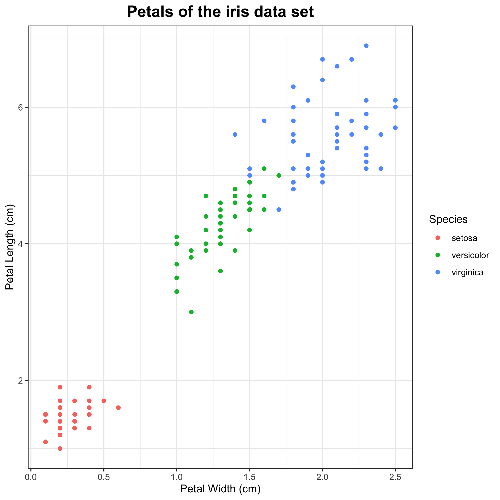
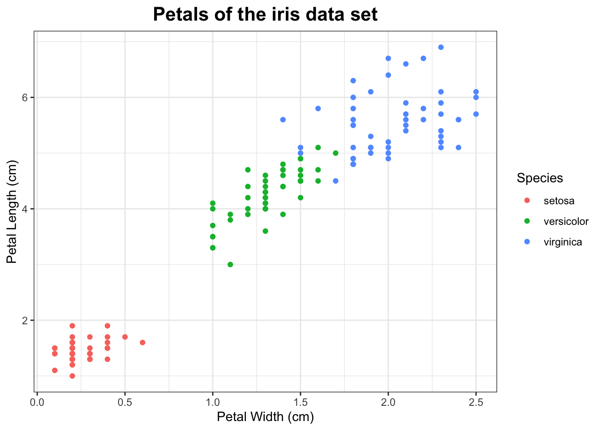

Iris Data Set

Data
This plot uses the iris data set that comes with R. This data frame contains the widths and lengths of the petals and sepals of 150 iris flowers. The flowers are of three different species: setosa, versicolor and virginica. There are 50 specimens of each species.
head(iris)## Sepal.Length Sepal.Width Petal.Length Petal.Width Species
## 1 5.1 3.5 1.4 0.2 setosa
## 2 4.9 3.0 1.4 0.2 setosa
## 3 4.7 3.2 1.3 0.2 setosa
## 4 4.6 3.1 1.5 0.2 setosa
## 5 5.0 3.6 1.4 0.2 setosa
## 6 5.4 3.9 1.7 0.4 setosaCode for plot
iris_petal_plot <- ggplot(data = iris, aes(x = Petal.Width, y = Petal.Length, colour = Species)) +
geom_point() + theme_bw() +
xlab("Petal Width (cm)") +
ylab("Petal Length (cm)") +
ggtitle("Petals of the iris data set") +
theme(plot.title = element_text(size = 16, face = "bold", hjust = 0.5))
iris_petal_plot